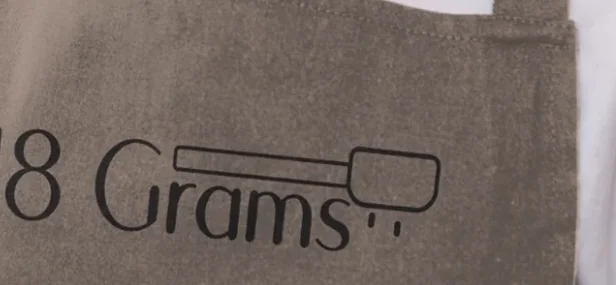
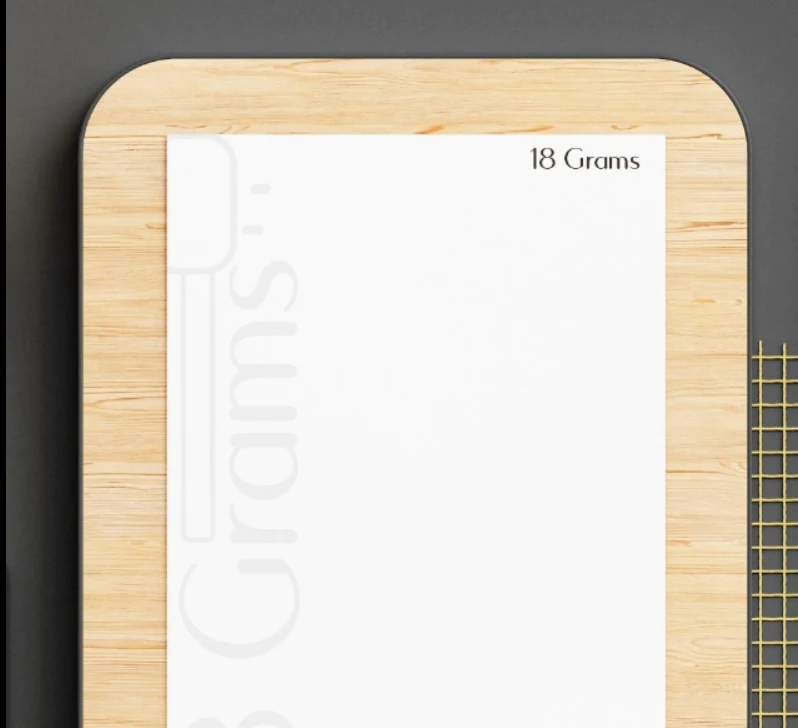

College project · Brand identity
18 Grams
An artisan coffee identity built around the precision of a single measure.

Project brief
The brief was to create a brand identity for an artisan coffee shop. The name 18 Grams connects the idea of precision with speciality coffee.
My role
Designer (student)
Process & sketches
[PROCESS AND SKETCHES]
Design decisions
The fine-line coffee tool sits alongside the wordmark on an apron. The menu carries the same restrained lettering onto a warm, pale surface.
Outcome
[PROJECT OUTCOME]
Design details



